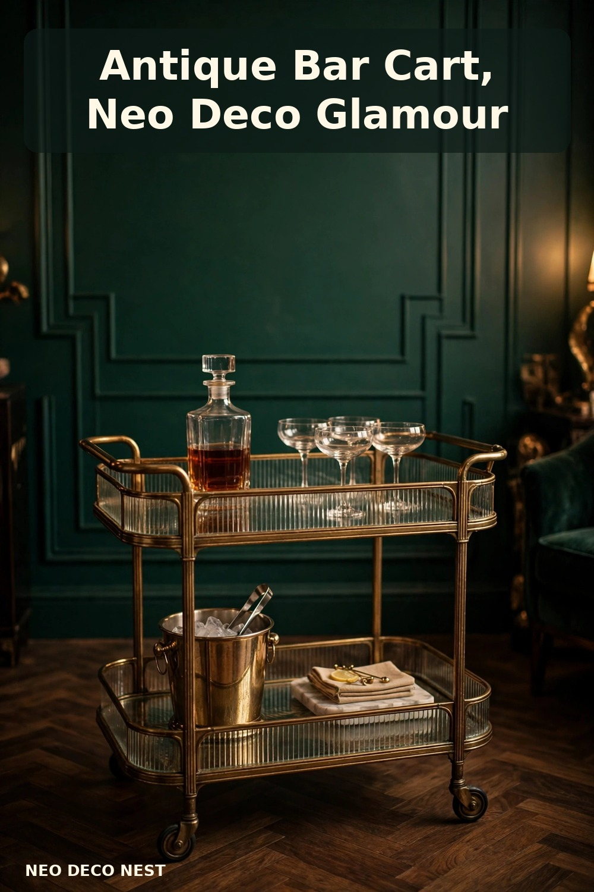
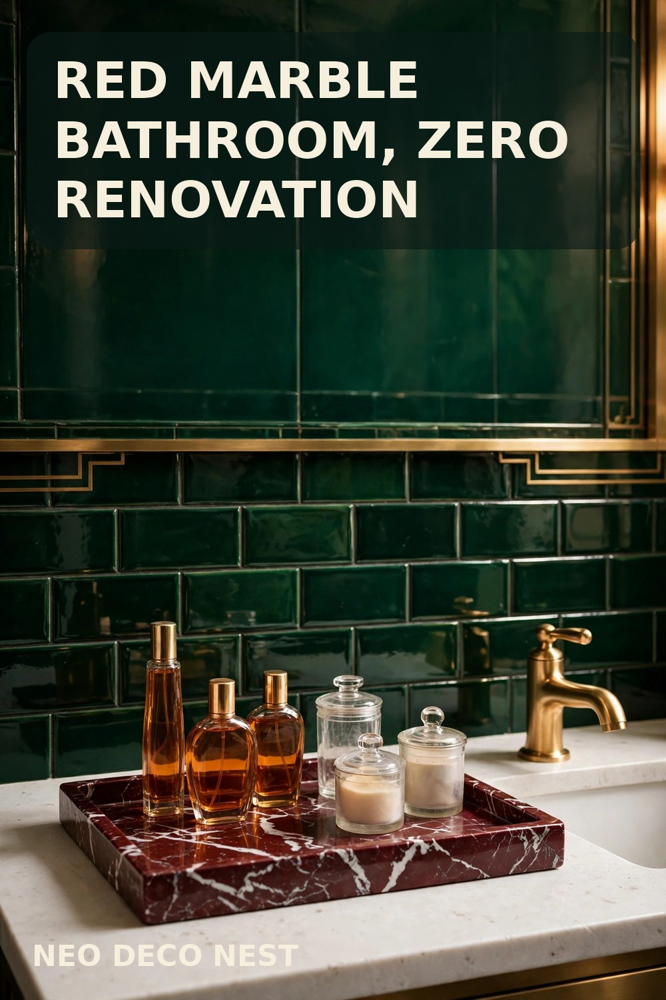

Neo Deco Home Decor, One Piece at a Time
Neo Deco Nest is a home decor studio guide for Millennial and Gen X homeowners who love the glamour of the 1920s, updated for real modern homes. Modern Art Deco, brass, marble, velvet and bold geometry, achieved one shoppable piece at a time. No major renovation, no contractor, no gut job.
Every roundup below collects pieces we have featured on Pinterest, with our honest notes on what each one does for a room.
Start With a Roundup

Art Deco Bar Cart IdeasThe cart, the coupes, the lamp, the tray and the bucket: a glam home bar in five pieces.
 Neo Deco Lighting
Neo Deco LightingMilk glass globes, fluted brass pendants, a sputnik and a starburst.
 Brass Small Upgrades
Brass Small UpgradesSunbursts, scalloped arches, cabinet pulls and a picture light. Weekend-sized changes.

Red Marble Bathroom IdeasReal red stone, brushed gold hardware and a bronze scalloped mirror. No renovation.
 Neo Deco Living Room Ideas
Neo Deco Living Room IdeasAn emerald velvet loveseat, a navy and gold rug, real marble and gold starbursts. No renovation.
 Neo Deco Dining Room Ideas
Neo Deco Dining Room IdeasA black velvet banquette, a round table set for four and a fluted sideboard with gold accents. No renovation.
Guides: Learn the Look
How to Get the Neo Deco Look Without RenovatingFive changes, in order: one anchor piece, new lighting, small brass upgrades, layered geometry and a marble accent.
Art Deco vs Modern DecorWhat is the difference — and how Neo Deco bridges the two. Neo Deco Decor
The style in one page: five pillars, the palette, and where to start.
How This Works
We publish a new Neo Deco find on Pinterest every day: lighting, bar carts, marble and brass accents, mirrors and small upgrades. When a piece earns a place in a roundup here, we link straight to it on Amazon so you can check the details yourself. Read more about us and how affiliate links work, or follow along on Pinterest.